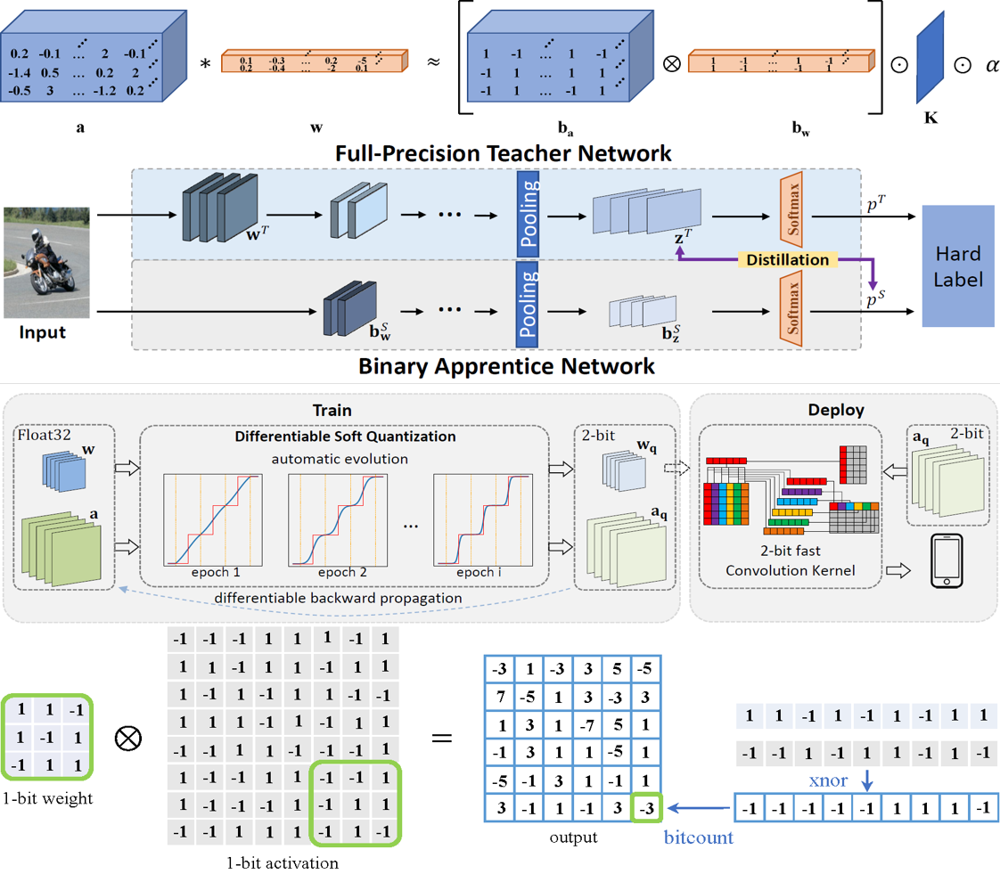
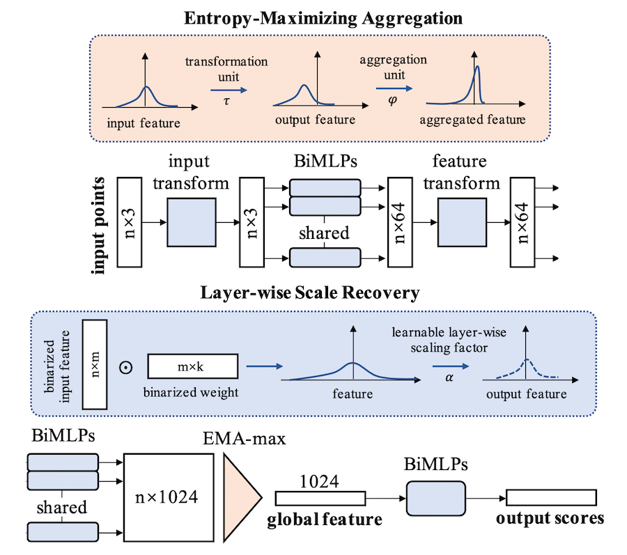
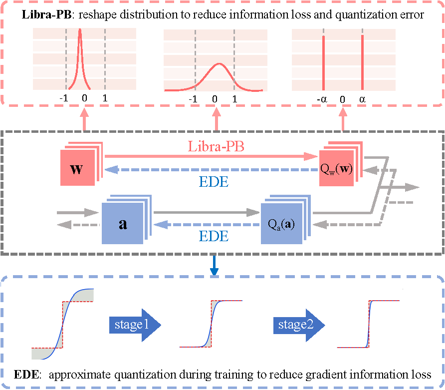
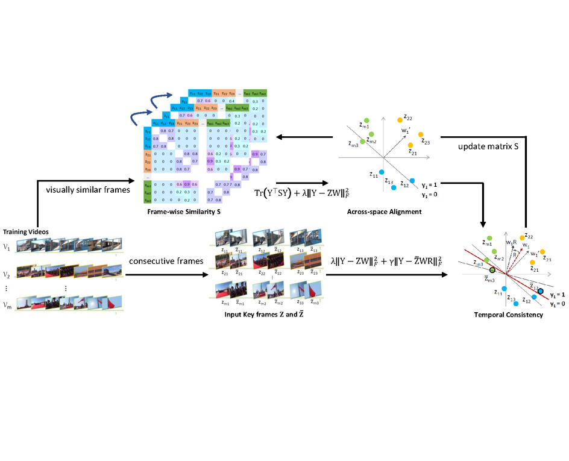

|
I am a PhD student (2019.09-) in the State Key Laboratory of Software Development Environment (SKLSDE)
at Beihang University,
supervised by Prof. Wei Li
and Prof. Xianglong Liu.
I obtained my BSc degree in Computer Science and Engineering from Beihang University in 2017.
CV / Github / Google Scholar / 知乎专栏 |
|
I'm interested in hardware-friendly deep learning. And my research goal is to enable state-of-the-art neural network models to be deployed on resource-limited hardware, which includes the compression and acceleration for multiple architectures, and the flexible and efficient deployment on multiple hardware. My research focus is mainly on:
|
[2021.07.23] One co-authored paper for object detection is accepted by ICCV 2021. [2021.05.17] I obtain Huawei Scholarship (Top1%). [2021.05.05] I am selected in Doctoral Consortium IJCAI 2021 (7 people from Mainland China). [2021.03.01] One co-first-authored oral paper for data-free quantization is accepted by CVPR 2021. [2021.01.13] One first-authored paper for PointNet binarization is accepted by ICLR 2021. [2020.09.20] I obtain China National Scholarship (Top2%). |
|
|
|  |
In this paper, we presented a comprehensive survey of these algorithms. We also investigated other practical aspects of binary neural networks such as the hardware-friendly design and the training tricks. Then, we gave the evaluation and discussions on different tasks. Finally, the challenges that may be faced in future research were prospected. |
|
|
|  |
We presented BiPointNet, the first model binarization approach for efficient deep learning on point clouds. BiPointNet gave an impressive 14.7× speedup and 18.9× storage saving on real-world resource-constrained devices. |
 |
We proposed Diverse Sample Generation (DSG) scheme to mitigate the adverse effects caused by homogenization in data-free quantization, which obtained significant improvements over various networks and quantization methods. |
|  |
We proposed a novel Information Retention Network (IR-Net) to retain the information that consists in the forward activations and backward gradients, and we were the first to implement and report 1-bit BNN speed on edge devices. |
|  |
In this paper, we first studied the multi-table learning problem for video search and attempted to learn binary codes by capturing the intrinsic video similarities from both the visual and the temporal aspects. |
[2021.05] Huawei Scholarship (Top1%). [2020.09] China National Scholarship (Top2%). [2019.10] Enrolled in the Tencent Rhino-Bird Elite Training Program (51 people worldwide). [2019.10] Enrolled in the Shen Yuan Honors College at Beihang University (Top3%). [2019.04] The ICPC China National Invitational Contest (Nanchang, China) Gold Medal. [2018.03] The ACM-ICPC Chinese Collegiate Programming Contest (Shizuishan, China) Gold Medal. [2016.07] The International Concert of Chinese Folk Music (Kobe, Japan) Gold Medal. |
[2021.07] I am invited to talk about Network Quantization in Multiple Scenarios at J Ventures (将门创投). [Video] [2021.06] I am invited to talk about Data-free Quantization at Zhidx (智东西公开课). [Video] [2021.05] I am invited to present our DSG (CVPR 2021 oral) at MSRA Tech Talk. [Slides] [2020.04] I am invited to present our IR-Net (CVPR 2020) and survey paper at JD AI Research. [Slides] [2020-] I regularly review papers for top-tier conferences and journals in machine learning and computer vision. |
[Fall 2020] Teaching Assistant in Machine Learning (Beihang University). |
|
In my free time, I like playing Chinese folk music, especially string music (Erhu, Zhonghu, etc.). In fact, I am almost a professional Erhu performer. I have studied Erhu supervised by Prof. Zaili Tian, Prof. Yang Gao, and Prof. Qingfu Zhu. I was the vice-president of the Beihang Folk Music Orchestra, here are some of the performance videos of our orchestra [Tencent Video]. |
|
|